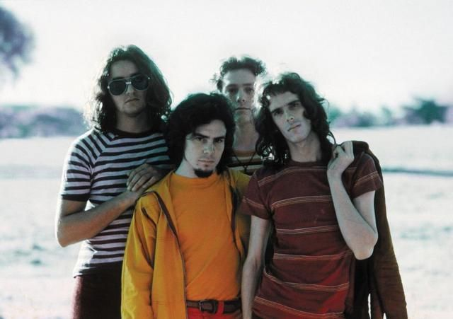
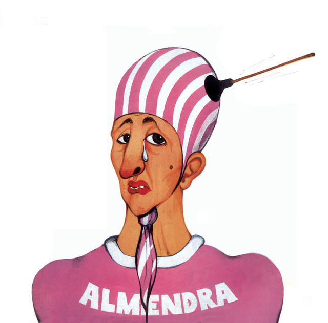
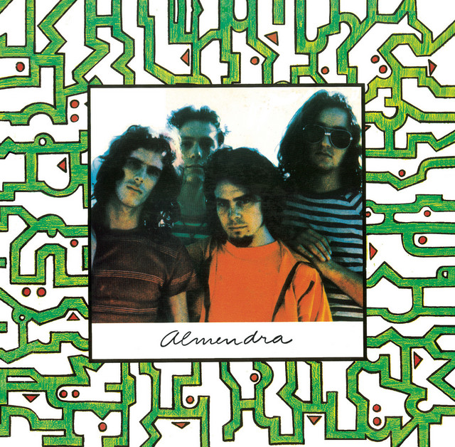
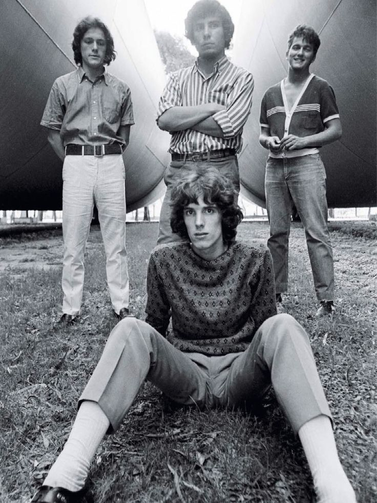

1er Disco de estudio:
Almendra 1

2do Disco de estudio:
Almendra 2
Historia de Almendra
Almendra fue una banda de rock argentino formada en 1967 en el barrio porteño de Belgrano por Luis Alberto Spinetta (guitarra y voz), Edelmiro Molinari (guitarra y coros), Emilio del Guercio (bajo y coros) y Rodolfo García (batería). Junto a Manal y Los Gatos es considerado grupo fundacional del rock argentino. La banda se formó en 1967 y se separó en 1970. Entre 1979 y 1981 y en 2009 tuvieron dos reuniones.
En una encuesta de 1985 realizada por Carlos Polimeni para Clarín, en la que participaron músicos y periodistas, su primer álbum Almendra fue considerado por la gran mayoría como el mejor disco de la historia del rock argentino.
Más recientemente, ha sido considerado por la revista Rolling Stone como el 6.º mejor del rock argentino, en tanto que su segundo álbum Almendra II fue colocado en la posición n.º 40. Su tema «Muchacha (Ojos de papel)» fue considerado la segunda mejor canción de todos los tiempos del rock argentino (tiene, a su vez Spinetta, otras nueve canciones entre las 100 mejores del pop-rock argentino)
“Fuimos a un recital de Los Gatos en el Payró y eran una de las mejores cosas que vi en Argentina hecha por un grupo nacional. Esa noche hubo un debate y Ricardo Kleiman me encaró, me preguntó quién era y qué hacía, le conté que tenía un grupo y me dijo: ‘Ah, bueno, dame tu dirección y un día de éstos vamos a escuchar el grupo’. Quedaron entusiasmadísimos, y nos hicieron una prueba para RCA Victor, donde tocamos ‘El mundo entre las manos’ y ‘Tema de Pototo’, y de donde salió el primer simple del grupo."
Luis Alberto Spinetta.

Grupo Almendra: Emilio del Guercio, Edelmiro Molinari, Luis Alberto Spinetta y Rodolfo Garcia - 1969